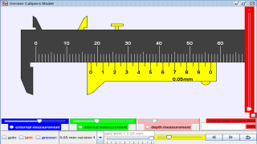

Vernier Caliper Simulation
Vernier calipers
Vernier calipers can measure internal dimensions (using the
uppermost
jaws in the picture at right), external dimensions using the pictured
lower jaws, and depending on the manufacturer, depth measurements by
the use of a probe that is attached to the movable head and slides
along the centre of the body. This probe is slender and can get into
deep grooves that may prove difficult for other measuring tools.
The vernier scales can be in metric
measurements on the upper and lower part of the scale.
Vernier calipers commonly used in industry provide a precision to a
hundredth of a millimetre (10 micrometres).
A more precise instrument used for the same purpose is the micrometer
.Parts of a vernier caliper:
- Outside jaws: used to measure external diameter or width
of an object (Blue)
- Inside jaws: used to measure internal diameter of an object
- Depth probe: used to measure depths of an object or a hole
( not shown in this model)
- Main scale: gives measurements in mm.
- Vernier gives measurements up to one decimal places in mm
- Retainer: used to block movable part to allow the easy
transferring a measurement ( not shown in this model)
The Vernier calipers model has
- an object (Blue) for the internal jaws to measure width of an
object with slider to control width of the object and simple drag
action to control position of object.
- an object (Green) for external jaws to measure internal diameter
of a cylinder for example with slider to control dimensions of the
cylinder.
- a slider for zero error slider
- checkbox for hint to scaffold the learners attention and point of
focus
- checkbox for answer to show the meaning of reading on the main
scale and the vernier scale with zero error calculations if any.
- drop down menu of the various common vernier scales for sense
making and additional testing out by learners their ideas of how
vernier works.
- fine <> control buttons for learners to manipulate the
model with single incremental precision
- slider control for fast changes in the vernier measurement
- reset button to bring simulaton back to original (default)
setting.
Credits:
The Vernier calipers model was created by created by Fu-Kwun Hwang,
customized by Loo Kang Wee and Wolfgang Christian using the
Easy Java Simulations (EJS) version 4.2 authoring and modeling
tool. An applet version of this model is available on the NTNU
website <
http://www.phy.ntnu.edu.tw/ntnujava/ >.
You can examine and modify this compiled EJS model if you run the
model (double click on the model's jar file), right-click within a
plot, and select "Open EJS Model" from the pop-up menu. You must,
of course, have EJS installed on your computer. Information about
EJS is available at: <http://www.um.es/fem/Ejs/>
and in the OSP comPADRE collection <http://www.compadre.org/OSP/>.